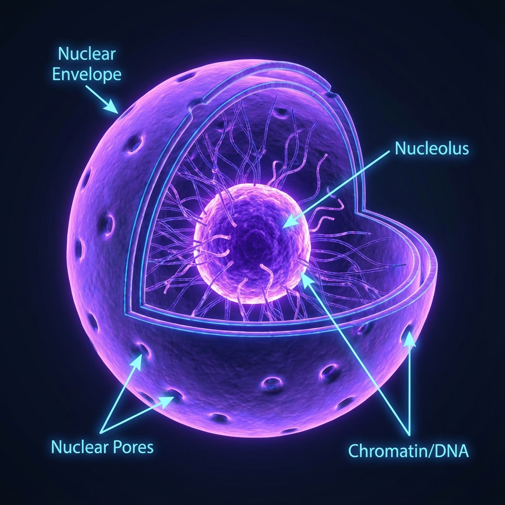
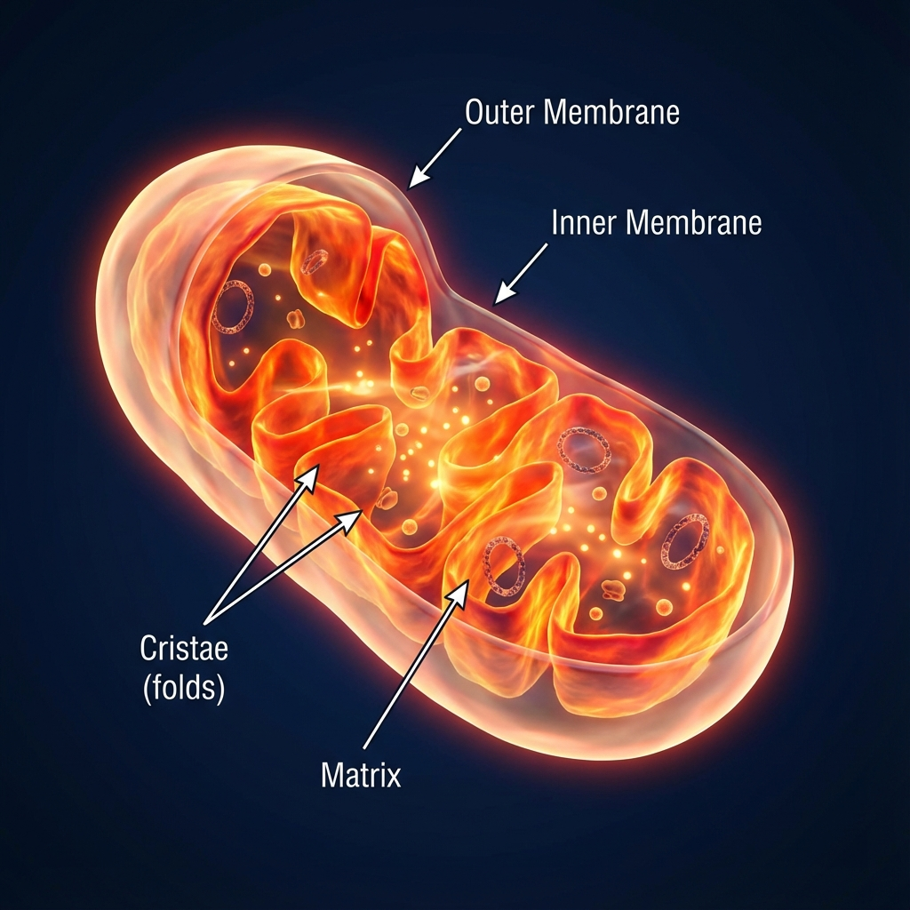
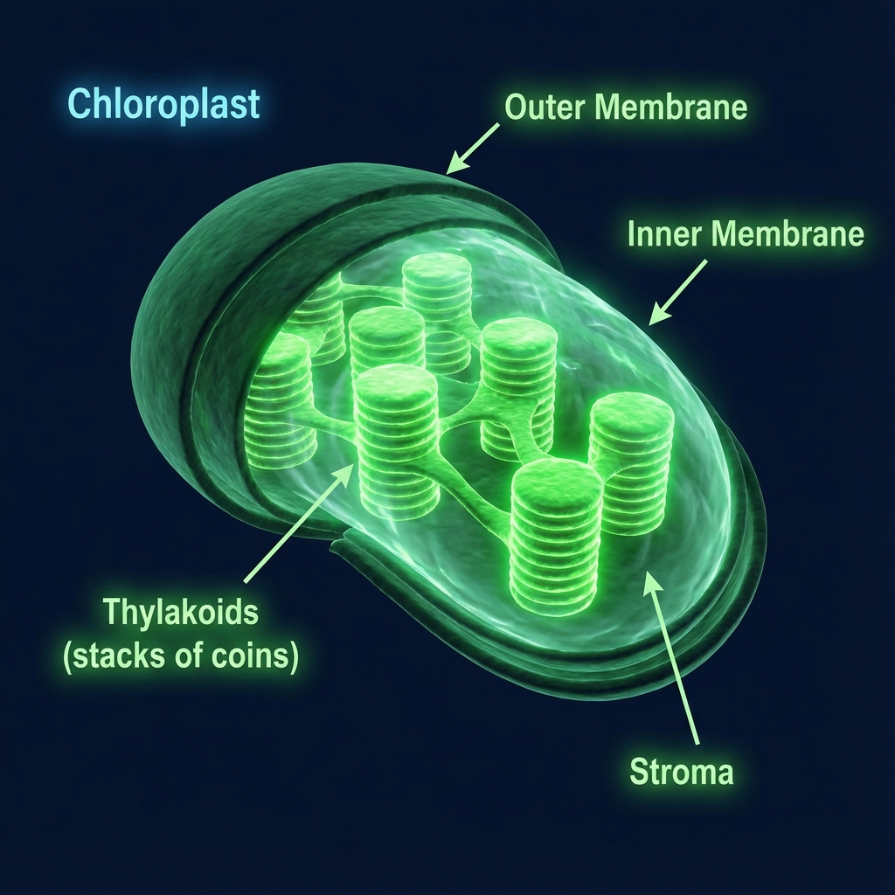

The Fundamental Unit of Life
Discover the amazing world of cells—from the tiny prokaryotes to the complex structures that make up your body.
What is a Cell?
Definition
The cell is the structural and functional unit of life. All living organisms are composed of cells.
- Structural: Provides structure to the body.
- Functional: Performs all vital functions (respiration, nutrition, etc.).
Key Characteristics
Cells are capable of independent existence and perform all essential functions of life. Anything less than a complete structure of a cell does not ensure independent living.
- Cells group together → form tissues.
- Tissues coordinate → form organs.
- Organs join → form organ systems.
- Organ systems together → form an organism.
History & Cell Theory
Discovery of the Cell
The science of cells began in 1665 when Robert Hooke used a simple microscope to observe a thin slice of cork. He saw many tiny box-like compartments, which reminded him of small rooms called “cells", and the name remained.
- 1665 – Hooke describes cork cells.
- 1838 – Schleiden: all plants are made of cells.
- 1839 – Schwann: all animals are made of cells.
- 1858 – Virchow: new cells arise from pre-existing cells.
Modern Cell Theory
Today, the modern cell theory extends these ideas and is often summarised in three powerful statements:
- Cell is the smallest structural unit of all living beings.
- Cell is also the functional unit – all life processes occur in cells.
- Every cell originates from a pre-existing cell by cell division.
Size, Shape & Number of Cells
Number of Cells
Living organisms may be made of a single cell or millions of cells:
- Unicellular – Amoeba, Paramecium.
- Few-celled – simple algae like Spirogyra.
- Multicellular – humans, plants, animals.
Cell Size
Cells show wide size differences:
- Smallest – many bacteria (microscopic).
- Longest – nerve cells in animals.
- Largest single cell – ostrich egg.
Cell Shape
Cell shape is closely linked to its function:
- Red blood cells – biconcave disc for easy gas exchange.
- Nerve cells – long and branched to transmit impulses.
- Columnar epithelial cells – tall, for absorption (intestine).
- Amoeba, WBC – change shape to move and engulf particles.
Prokaryotic vs Eukaryotic Cells
Prokaryotic Cells
Prokaryotes (pro = “before", karyon = “nucleus") are ancient, simple cells whose DNA is not enclosed in a true nucleus.
- No well-defined nuclear membrane; DNA lies naked.
- No membrane-bound organelles (no mitochondria, Golgi, etc.).
- Have cell wall, plasma membrane and cytoplasm.
- Contain ribosomes for protein synthesis.
- May have plasmids (extra circular DNA).
- Mesosomes help in cellular respiration.
- Flagella and pili help in movement and attachment.
Eukaryotic Cells
Eukaryotes (eu = “true") possess a true nucleus and a full set of membrane-bound organelles, making them structurally complex and efficient.
- DNA enclosed within a double-layered nuclear membrane.
- Have organelles like mitochondria, ER, Golgi, lysosomes, plastids, etc.
- Cell wall present in plant cells, absent in animals.
- Chloroplasts in plants carry out photosynthesis.
Cell Organelles & Their Functions
1. Cell Membrane
The thin, living boundary of the cell made of a phospholipid bilayer and proteins. It is selectively permeable, allowing only certain substances in or out.
- Maintains internal environment of the cell.
- Controls entry and exit of ions, nutrients and waste.
- Site for processes like diffusion, osmosis and active transport.
2. Cell Wall (Plants)
A rigid outer covering made of cellulose that lies outside the cell membrane in plants, fungi and some bacteria.
- Provides definite shape and mechanical strength.
- Prevents bursting in hypotonic environments.
- Freely permeable to water and small molecules.
3. Cytoplasm
Semi-fluid, jelly-like substance filling the inside of the cell. All organelles are suspended in it.
- Site where many metabolic reactions occur (e.g. glycolysis).
- Distributes materials throughout the cell.
4. Nucleus
The control centre of the cell. It is a double-membrane-bound organelle containing the cell’s genetic material.
- Nuclear membrane with pores controls exchange with cytoplasm.
- Chromatin (DNA + protein) carries genes.
- Condenses into chromosomes during cell division.
- Nucleolus inside nucleus synthesises rRNA and forms ribosomes.
5. Endoplasmic Reticulum (ER)
Rough ER (RER)
- Studded with ribosomes → rough appearance.
- Synthesises and modifies proteins.
- Transports proteins to other regions, including Golgi apparatus.
Smooth ER (SER)
- No ribosomes → smooth.
- Synthesises lipids and steroids.
- Detoxifies drugs and poisonous substances in liver cells.
6. Golgi Apparatus
A stack of membrane-bound sacs and vesicles. Often called the “post office” or “packaging centre” of the cell.
- Modifies, sorts and packages proteins and lipids.
- Forms secretory vesicles and lysosomes.
- Important for synthesis of cell wall components in plants.
7. Lysosomes
Membrane-bound sacs filled with digestive enzymes. They break down unwanted materials.
- Digest worn-out organelles, food particles and engulfed bacteria.
- Can digest the entire cell when it is damaged or old → “suicide bags”.
8. Mitochondria
Double-membraned organelles often called the “powerhouse of the cell”.
- Inner membrane forms folds called cristae for increased surface area.
- Site of aerobic respiration.
- Produce ATP, the energy currency of the cell.
- Contain their own DNA and ribosomes → semi-autonomous.
9. Plastids (Plant Cells)
Plastids are double-membrane organelles found only in plant cells.
- Chloroplasts – green pigment (chlorophyll), site of photosynthesis.
- Chromoplasts – coloured plastids, give flowers and fruits their colour.
- Leucoplasts – colourless, store starch, oil and proteins.
10. Vacuoles
Large, fluid-filled sacs surrounded by a single membrane (tonoplast), especially prominent in plant cells.
- Store water, food, pigments and waste products.
- Provide turgidity and rigidity to plant cells.
- In Amoeba, contractile vacuoles help in osmoregulation.
11. Centrosome & Centrioles (Animals)
Present only in animal cells, the centrosome contains a pair of centrioles surrounded by microtubules.
- Play a key role in spindle formation during cell division.
- Help in equal distribution of chromosomes to daughter cells.
Transport of Materials
Passive Transport
Movement of substances without using cellular energy (ATP) from higher to lower concentration.
- Simple diffusion – gases like O₂ and CO₂ move directly through the membrane.
- Facilitated diffusion – ions or molecules use carrier proteins (permeases).
- Osmosis – movement of water through a selectively permeable membrane.
Osmosis in Detail
- Endosmosis – water enters the cell; cell swells.
- Exosmosis – water leaves the cell; cell shrinks.
- Plasmolysis – in plant cells, cytoplasm and membrane shrink away from cell wall due to exosmosis.
Depending on surrounding solution:
- Isotonic – equal solute; no net water movement.
- Hypotonic – less solute outside; water enters; cell may swell.
- Hypertonic – more solute outside; water leaves; cell shrinks.
Active Transport
Movement of substances from lower to higher concentration using energy (ATP).
- Always against the concentration gradient.
- Requires specific carrier proteins in the membrane.
Bulk Transport
Movement of large particles or large volumes of fluid by forming vesicles.
- Endocytosis – materials move into the cell.
- • Phagocytosis – “cell eating”, intake of solids.
- • Pinocytosis – “cell drinking”, intake of fluid.
- • Receptor-mediated endocytosis – highly specific uptake.
- Exocytosis – vesicles fuse with membrane to release contents outside.
Cellulose & Digestion
What is Cellulose?
Cellulose is a complex carbohydrate (polysaccharide) made of long chains of glucose molecules linked by special β-glycosidic bonds.
- Main component of plant cell walls.
- Insoluble in water and chemically inert in pure form.
- Gives plants strength and rigidity.
Digestion of Cellulose
- Termites – contain microbes in their gut that produce enzymes to digest cellulose.
- Ruminants (cow, buffalo) – have a rumen with bacteria that digest cellulose anaerobically, releasing methane.
- Humans – lack the enzyme to break β-linkages, so cellulose is not digested.
In humans, cellulose acts as dietary fibre or roughage. It:
- adds bulk to food,
- helps movement of food in intestine,
- reduces risk of constipation and colon problems.
Plant vs Animal · Prokaryotic vs Eukaryotic
Plant Cell vs Animal Cell
| Plant Cell | Animal Cell |
|---|---|
| Cell wall present (cellulose). | No cell wall, only cell membrane. |
| Plastids present (chloroplast, etc.). | Plastids absent. |
| Large central vacuole. | Small or absent vacuoles. |
| No centrosome/centriole. | Centrosome with centrioles present. |
| Usually fixed, rectangular shape. | Generally irregular or round. |
Prokaryotic vs Eukaryotic Cells
| Prokaryotic | Eukaryotic |
|---|---|
| No true nucleus; DNA naked. | True nucleus with nuclear membrane. |
| No membrane-bound organelles. | Many organelles (mitochondria, ER, etc.). |
| Smaller, simpler cells. | Larger, more complex cells. |
| Cell division mostly by binary fission. | Cell division by mitosis/meiosis. |
| Examples: bacteria, archaea. | Examples: plants, animals, fungi, protists. |
Quick Revision · Micro Quiz
- Diffusion can involve any particle (gas/solute), whereas osmosis involves only water.
- Osmosis requires a selectively permeable membrane; diffusion does not.